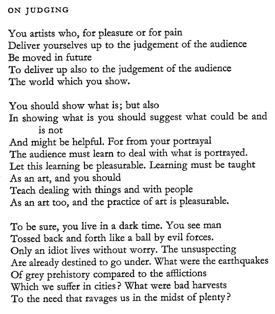

The Archive · 3 issues
One Piece of MyMind
Every issue of the weekly zine built from your MyMind saves.
 Issue No. 1October 30 – November 5, 2026The body on stage · Sculpture you can sit in, wear, live in · Stripped to black and white · Faces, hidden and cosmic · The Real Thing · Skill, and the machines that erase it…Issue No. 2November 7 – 14, 2026The mask · Drawing the universe · Paper and cloth · Building a world · Costume on the shore · How abstraction is taught…
Issue No. 1October 30 – November 5, 2026The body on stage · Sculpture you can sit in, wear, live in · Stripped to black and white · Faces, hidden and cosmic · The Real Thing · Skill, and the machines that erase it…Issue No. 2November 7 – 14, 2026The mask · Drawing the universe · Paper and cloth · Building a world · Costume on the shore · How abstraction is taught…
Issue No. 3November 14 – 20, 2026Words on paper · Strange objects · Great advice for shitty people · What they wore · Instructions · The local AI stack grows up…Nothing matches that.